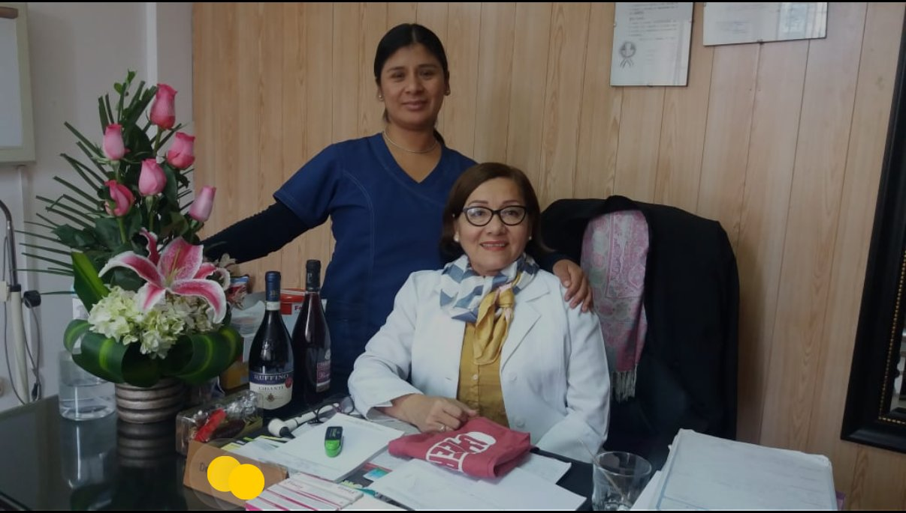

Medicina general
Evaluación y orientación médica para molestias y problemas de salud frecuentes.
La Dra. Ana Polanco acompaña a las familias de Vitarte con atención médica general, trato humano y más de 20 años de experiencia.
Lunes a sábado · 9:00 a. m. – 2:00 p. m.

Atención de medicina general para adultos y niños. Comunícate con recepción para consultar por disponibilidad, precios y servicios específicos.
Evaluación y orientación médica para molestias y problemas de salud frecuentes.
Consultas médicas generales con atención personalizada para cada etapa de la vida.
Orientación para controles de salud y seguimiento preventivo.
Evaluación y seguimiento médico de presión arterial y niveles de glucosa.
Orientación y coordinación de análisis como hemograma, colesterol y examen de orina, según disponibilidad.
Consulta de medicina general para inquietudes de salud de la mujer y derivación cuando corresponda.
Con más de 20 años de experiencia, la Dra. Ana Polanco se ha ganado la confianza de familias de Vitarte a través de una atención cercana, respetuosa y personalizada.
Su consultorio busca que cada paciente reciba una evaluación clara y orientación sobre los siguientes pasos para cuidar su salud.
Colegio Médico del Perú: CMP 20892. Puedes verificar la habilitación profesional en el portal oficial del CMP.
Para proteger tu privacidad, no envíes resultados, diagnósticos ni datos médicos sensibles por el formulario o enlace de contacto.
Jr. Libertad 110, 2.º piso
Centro Médico Berrocal
Ate Vitarte, Lima, Perú
Horario: lunes a sábado, 9:00 a. m. a 2:00 p. m.
Domingo: cerrado
Teléfono y WhatsApp: +51 923 289 077
Ver ubicación en Google MapsLa ubicación debe verificarse antes de visitar, mientras se confirma la actualización del marcador en Google.